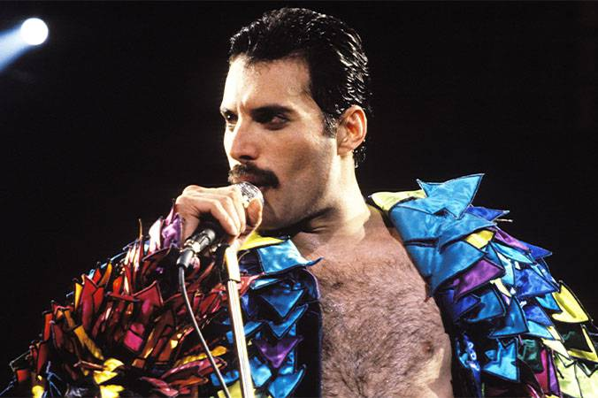
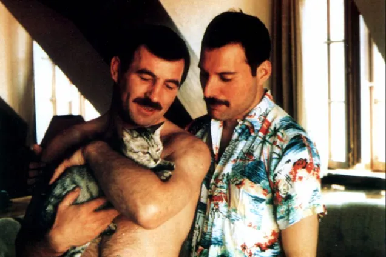
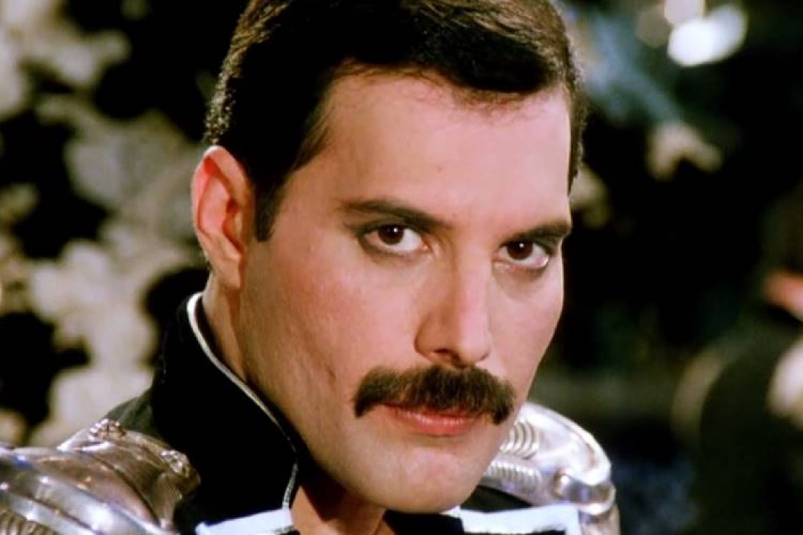

Infância e Adolescência
 A casa em Zanzibar,onde Mercury viveu os seus primeiros anos
A casa em Zanzibar,onde Mercury viveu os seus primeiros anos
Freddie Mercury, batizado de Farrokh Bulsara, nasceu na colônia britânica Cidade de Pedra, em Zanzibar (hoje parte da Tanzânia), seus pais, Bomi e Jer Bulsara, eram parsis zoroastrianos de Guzerate, na Índia.A família Bulsara se mudou da Índia para Zanzibar para que Bomi pudesse manter seu emprego no Banco Colonial Inglês, e lá o casal também teve sua segunda filha, Kashmira. Em 1954, aos oito anos, o garoto foi enviado para estudar na St. Peter Boarding School, uma escola para meninos na cidade indiana de Bombaim, tendo feito todo o trajeto sozinho a bordo de um navio.Nessa época, já grande apreciador de música, ele começou a ter aulas de piano, muito influenciado pela cantora local Lata Mangeshkar.Aos doze anos, montou uma banda chamada The Hectics, com quem ele se apresentava em eventos escolares cantando sucessos de artistas como Cliff Richard e Little Richard, e foi nessa época que ele passou a ser chamado de "Freddie" pelos amigos.Apesar de ser apreciado pelos mais velhos devido a seu carisma e talento musical, o garoto sofria muito bullying por parte das outras crianças de sua idade devido a sua personalidade afeminada, o que o levou a se tornar uma pessoa introspectiva e muito tímida quando perto de estranhos.Quando mais velho, Freddie passou a morar na casa de sua avó, mas continuou frequentando o mesmo colégio até o fim do curso, voltando para a casa de seus pais em seguida. Quando Freddie tinha dezessete anos, a família Bulsara, assustada com a Revolução Civil de Zanzibar de 1964, mudou-se para a capital inglesa, Londres, onde ele passou a estudar arte na Escola Politécnica Isleworth, posteriormente ganhando seu diploma como designer gráfico através da Ealing Art College.[5] Após sua graduação, Freddie foi trabalhar como vendedor de roupas no famoso Mercado Kensington, ao lado de sua então namorada Mary Austin, e também foi atendente no Aeroporto Heathrow por um breve tempo.Em 1969, Freddie iniciou a banda Ibex, depois nomeada Wreckage, mas que não durou muito tempo, depois integrando o grupo Sour Milk Sea. Em abril de 1970, Freddie se juntou ao guitarrista Brian May e ao baterista Roger Taylor no trio Smile, cujo nome foi alterado para "Queen", e nessa época, Freddie adotou a alcunha "Mercury" como sobrenome artístico, baseado na letra de uma de suas primeiras canções, chamada de My Fairy King.
Carreira musical

Mercury se tornou mundialmente famoso como vocalista da banda de hard rock Queen, que ele formou ao lado do guitarrista Brian May e do baterista Roger Taylor em 1971 sob o nome Smile, com o nome "Queen" sendo adotado logo depois do recrutamento do baixista John Deacon.Os primeiros álbuns da banda, Queen e Queen II tiveram uma recepção mais limitada ao Reino Unido,e o grupo conseguiu certa projeção mundial com o disco Sheer Heart Attack, com a conhecida canção "Killer Queen",mas foi em 1975 que a banda atingiu o estrelato com o álbum A Night at the Opera, com sucessos como "Love of My Life" e "You're My Best Friend", mas principalmente com a canção "Bohemian Rhapsody", um grande clássico na qual Mercury fundiu o rock and roll com a ópera e criou aquela que é, até hoje, considerada uma das maiores gravações musicais da história.O Queen seguiu lançando discos muito bem vendidos e realizando grandes turnês mundiais. Em 1976, foi lançado o álbum A Day at the Races, com as canções mais famosas "Somebody to Love" e "Tie Your Mother Down". E em 1977 saiu News of the World, que trouxe os dois maiores hinos do grupo, "We Will Rock You" e "We Are the Champions".O álbum seguinte, Jazz, não foi um fracasso, mas falhou em conseguir a mesma aceitação de seus antecessores, apesar de que com The Game o Queen voltou a ser elogiado, trazendo canções como "Crazy Little Thing Called Love" e "Another One Bites the Dust", uma canção ao estilo de funk rock que foi um grande sucesso e esteve no topo da Billboard Hot 100 por várias semanas.Na turnê de The Game, o Queen tornou-se a primeira grande banda europeia a se apresentar na América do Sul, com cinco datas na Argentina e duas no Estádio do Morumbi, na cidade brasileira de São Paulo, atraindo uma audiência combinada de quase trezentas mil pessoas.
Relacionamentos e sexualidade

Mercury era bissexual não assumido, embora seja costumeiramente descrito como totalmente gay.Em dezembro de 1974, quando perguntado diretamente sobre sua sexualidade por um repórter do jornal NME, Mercury respondeu que "houve uma época em que ele era jovem e desprotegido", e que teve sua "cota de humilhações escolares", deixando implícito que ser gay o levou a ser discriminado por seus colegas de escola. Raramente Freddie falava sobre sua vida particular para a imprensa, e sua família e amigos seguiam a mesma linha, mas sua irmã, Kashmira, disse a uma rede de televisão britânica que o cantor jamais falou sobre sua homossexualidade diante da família, mas que todos sabiam, e isso nunca os havia incomodado.Arte em fita adesiva por Kerry Mott, formando uma imagem que representa Freddie na década de 1970. No início dos anos 70, Freddie iniciou um relacionamento com a vendedora de roupas Mary Austin, que ele conheceu através de Brian May, que se estendeu durante anos.O envolvimento amoroso deles acabou quando Freddie confessou sua natureza homossexual para ela, mas os dois mantiveram uma grande amizade por toda a vida, com Freddie dedicando a famosa canção "Love of my Life" em sua homenagem, e também sendo padrinho de seu primeiro filho.Em seu testamento, Freddie deixou para ela sua mansão em Londres, assim como a detenção de todos os direitos autorais de sua discografia, o que continua a render a Mary milhões de libras todos os anos. A moça ainda vive com sua família na casa de Freddie. No fim dos anos 70, o cantor também teve um relacionamento sério com um executivo da Elektra Records, que durou cerca de um ano. Pouco tempo depois, o cantor se envolveu com a atriz austríaca Barbara Valentin, que inclusive foi uma das figurantes no videoclipe da canção "It's a Hard Life", e em 1985 iniciou outro sério romance com o cabeleireiro Jim Hutton, com quem Freddie viveu até o fim de sua vida; Jim não deixou Freddie durante sua doença e estava ao lado dele na cama quando o cantor faleceu. Jim morreu vítima de câncer em 2010. “ Muitos dos meus amantes me perguntam por que eles não podem substituir Mary, mas é simplesmente impossível. Mary é minha única amiga, e eu não quero mais ninguém. Para mim, é como um casamento. Nós acreditamos um no outro, e é o suficiente para mim.
Doenças e Morte

Em outubro de 1986, a imprensa britânica começou a noticiar que Mercury havia sido diagnosticado como portador do vírus da AIDS em uma clínica da rua Harley, e uma repórter do The Sun perguntou ao cantor a respeito quando ele desembarcou em um aeroporto voltando de uma viagem ao Japão, e ele negou o boato.De acordo com o parceiro de Freddie, Jim Hutton, o cantor foi diagnosticado soropositivo em abril de 1987, mas decidiu negar todos os boatos sempre que questionado.No entanto, a saúde física de Freddie se deteriorou rapidamente, e ele começou a aparecer em público cada vez mais magro e pálido, o que levou a imprensa a publicar centenas de artigos especulando sobre o assunto. Nessa época, o Queen havia se aposentado dos palcos devido à condição do vocalista, e em 18 de fevereiro de 1990, quando o Queen foi homenageado no Brit Awards, em Londres, recebendo uma condecoração por sua "Contribuição a Música Britânica", Freddie compareceu ao lado da banda, mas não falou praticamente nada (Brian fez o discurso), exceto um "obrigado, boa noite", o que apenas alimentou os rumores. Naquela altura, para o grande público, já era uma certeza que o cantor era, de fato, soropositivo, e o Brit Awards foi sua última aparição pública. Em 1991, totalmente recluso, Freddie era vítima constante do assédio de repórteres, que cercavam sua casa e não iam embora durante dias para conseguir uma foto sua, que estava com uma horrível aparência devido a sua doença. Uma foto do rosto de Freddie, magro e com manchas negras, estampou uma edição do The Sun na matéria "É Oficial: Freddie Está Gravemente Doente", que foi a edição de jornal mais vendida no ano no Reino Unido.[11] Apesar de não poder se apresentar ao vivo, Freddie continuou a trabalhar com a banda até o fim. Depois de descobrir sua doença, o cantor lançou um disco de ópera e também lançou mais dois álbuns com a banda, e continuou a gravar videoclipes com o grupo. O vídeo de "These Are the Days of Our Lives", gravado em maio de 1991, foi o último trabalho de Freddie em frente às câmeras.Para esconder as horríveis manchas que tinha na pele, ele teve de passar horas se maquiando, e o vídeo teve de ser lançado em preto e branco para esconder sua aparência. Em junho de 1991, Freddie continuou a gravar vocais para novas músicas do Queen para que a banda as terminasse depois, pois ele sabia que não sobreviveria por muito tempo, mas um certo dia teve de irremediavelmente abandonar os estúdios por não ter mais forças nem para se manter em pé.Essas canções foram posteriormente lançadas no álbum póstumo Made in Heaven, em 1995. O Cemitério de Kensal Green, onde o corpo de Freddie Mercury foi cremado. Em seus últimos dias, Freddie perdeu a visão e não conseguia sair da cama, por isso decidiu parar de tomar sua medicação em 10 de novembro de 1991,e passou a esperar pela morte.Em 22 de novembro, Freddie chamou o empresário do Queen, Jim Beach, e pediu que ele fizesse um comunicado à imprensa para divulgar sua doença, que foi lançado no dia seguinte. Cerca de vinte e quatro horas após o comunicado ser feito, durante a noite, Freddie faleceu vítima de broncopneumonia, acarretada pela AIDS.Seu funeral ocorreu em Londres três dias depois, assistido por trinta e cinco pessoas, incluindo a família de Freddie, os membros e o empresário do Queen, Mary Austin, Jim Hutton e poucas outras pessoas.O corpo do cantor foi cremado no Cemitério de Kensal Green, e suas cinzas foram entregues a Mary Austin, e apenas ela, Jim Hutton, a família do cantor e os membros do Queen sabem onde as cinzas foram depositadas, e nunca revelaram seu paradeiro. “ Seguindo a enorme comoção da mídia nas últimas duas semanas, eu gostaria de confirmar que fui testado como soropositivo e tenho AIDS. Eu senti que era melhor manter isso privado até agora para proteger a mim e aqueles ao meu redor. No entanto chegou a hora de meus amigos e meus fãs saberem a verdade, e espero que todos se juntem a mim e aos meus médicos na luta contra essa terrível doença. Minha privacidade sempre foi importante para mim e sou famoso por minha falta de entrevistas, por favor, entendam que essa política continuará. Parte do comunicado de Freddie Mercury assumindo ser soropositivo. ” Posteriormente Peter Freestone, assistente e amigo próximo de Freddie, revelou que a decisão do cantor de revelar sua doença permitiu que ele "partisse em paz", sem ter segredos a esconder sobre sua condição. Freddie Mercury e a família eram seguidores da religião zoroastriana e, de acordo com as suas crenças, a maior parte dos seus bens foram queimados após a sua morte, exceto a sua coleção de selos que está atualmente no Museu Postal em Londres. Uma das razões pelas quais pensamos que a coleção não foi destruída foi porque os selos tinham vindo originalmente do seu pai. Os selos não foram recolhidos na forma típica: o cantor encomendava os selos com base nas suas cores e padrões
Em outubro de 1986, a imprensa britânica começou a noticiar que Mercury havia sido diagnosticado como portador do vírus da AIDS em uma clínica da rua Harley, e uma repórter do The Sun perguntou ao cantor a respeito quando ele desembarcou em um aeroporto voltando de uma viagem ao Japão, e ele negou o boato.De acordo com o parceiro de Freddie, Jim Hutton, o cantor foi diagnosticado soropositivo em abril de 1987, mas decidiu negar todos os boatos sempre que questionado.No entanto, a saúde física de Freddie se deteriorou rapidamente, e ele começou a aparecer em público cada vez mais magro e pálido, o que levou a imprensa a publicar centenas de artigos especulando sobre o assunto. Nessa época, o Queen havia se aposentado dos palcos devido à condição do vocalista, e em 18 de fevereiro de 1990, quando o Queen foi homenageado no Brit Awards, em Londres, recebendo uma condecoração por sua "Contribuição a Música Britânica", Freddie compareceu ao lado da banda, mas não falou praticamente nada (Brian fez o discurso), exceto um "obrigado, boa noite", o que apenas alimentou os rumores. Naquela altura, para o grande público, já era uma certeza que o cantor era, de fato, soropositivo, e o Brit Awards foi sua última aparição pública. Em 1991, totalmente recluso, Freddie era vítima constante do assédio de repórteres, que cercavam sua casa e não iam embora durante dias para conseguir uma foto sua, que estava com uma horrível aparência devido a sua doença. Uma foto do rosto de Freddie, magro e com manchas negras, estampou uma edição do The Sun na matéria "É Oficial: Freddie Está Gravemente Doente", que foi a edição de jornal mais vendida no ano no Reino Unido.[11] Apesar de não poder se apresentar ao vivo, Freddie continuou a trabalhar com a banda até o fim. Depois de descobrir sua doença, o cantor lançou um disco de ópera e também lançou mais dois álbuns com a banda, e continuou a gravar videoclipes com o grupo. O vídeo de "These Are the Days of Our Lives", gravado em maio de 1991, foi o último trabalho de Freddie em frente às câmeras.Para esconder as horríveis manchas que tinha na pele, ele teve de passar horas se maquiando, e o vídeo teve de ser lançado em preto e branco para esconder sua aparência. Em junho de 1991, Freddie continuou a gravar vocais para novas músicas do Queen para que a banda as terminasse depois, pois ele sabia que não sobreviveria por muito tempo, mas um certo dia teve de irremediavelmente abandonar os estúdios por não ter mais forças nem para se manter em pé.Essas canções foram posteriormente lançadas no álbum póstumo Made in Heaven, em 1995. O Cemitério de Kensal Green, onde o corpo de Freddie Mercury foi cremado. Em seus últimos dias, Freddie perdeu a visão e não conseguia sair da cama, por isso decidiu parar de tomar sua medicação em 10 de novembro de 1991,e passou a esperar pela morte.Em 22 de novembro, Freddie chamou o empresário do Queen, Jim Beach, e pediu que ele fizesse um comunicado à imprensa para divulgar sua doença, que foi lançado no dia seguinte. Cerca de vinte e quatro horas após o comunicado ser feito, durante a noite, Freddie faleceu vítima de broncopneumonia, acarretada pela AIDS.Seu funeral ocorreu em Londres três dias depois, assistido por trinta e cinco pessoas, incluindo a família de Freddie, os membros e o empresário do Queen, Mary Austin, Jim Hutton e poucas outras pessoas.O corpo do cantor foi cremado no Cemitério de Kensal Green, e suas cinzas foram entregues a Mary Austin, e apenas ela, Jim Hutton, a família do cantor e os membros do Queen sabem onde as cinzas foram depositadas, e nunca revelaram seu paradeiro. “ Seguindo a enorme comoção da mídia nas últimas duas semanas, eu gostaria de confirmar que fui testado como soropositivo e tenho AIDS. Eu senti que era melhor manter isso privado até agora para proteger a mim e aqueles ao meu redor. No entanto chegou a hora de meus amigos e meus fãs saberem a verdade, e espero que todos se juntem a mim e aos meus médicos na luta contra essa terrível doença. Minha privacidade sempre foi importante para mim e sou famoso por minha falta de entrevistas, por favor, entendam que essa política continuará. Parte do comunicado de Freddie Mercury assumindo ser soropositivo. ” Posteriormente Peter Freestone, assistente e amigo próximo de Freddie, revelou que a decisão do cantor de revelar sua doença permitiu que ele "partisse em paz", sem ter segredos a esconder sobre sua condição. Freddie Mercury e a família eram seguidores da religião zoroastriana e, de acordo com as suas crenças, a maior parte dos seus bens foram queimados após a sua morte, exceto a sua coleção de selos que está atualmente no Museu Postal em Londres. Uma das razões pelas quais pensamos que a coleção não foi destruída foi porque os selos tinham vindo originalmente do seu pai. Os selos não foram recolhidos na forma típica: o cantor encomendava os selos com base nas suas cores e padrões